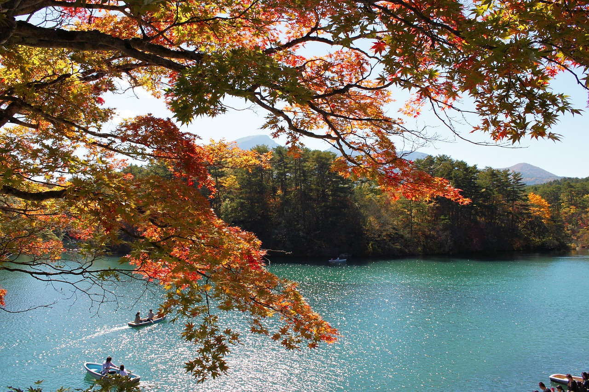

栗林公園

住所：〒760-0073 香川県高松市栗林町１丁目２０−１６
下灘駅

愛媛県伊予市にある下灘駅は、「日本一海に近い駅」として知られ、多くの映画やドラマ、青春18きっぷのポスターの舞台となってきました。
ホームに立つと、目の前に瀬戸内海の雄大な景色が広がり、特に夕暮れ時は絶景です。
無人駅の素朴な雰囲気が、訪れる人々にノスタルジーを感じさせ、多くの鉄道ファンや観光客を魅了し続けています。
住所：愛媛県伊予市双海町大久保
中野うどん学校

香川県琴平町にある中野うどん学校は、本場讃岐うどんの手打ち体験ができるユニークな施設です。
粉をこねるところから始まり、足踏み、麺切りまで、すべての工程を楽しく学べます。
作ったうどんはその場で試食でき、お土産として持ち帰ることも可能です。
卒業証書ももらえるので、旅の思い出作りにもぴったり。家族や友人と一緒に、ワイワイ楽しみながら本場の味を体験できます。
住所：〒761-8081 香川県高松市成合町8番地1
サイトURL：https://www.nakanoya.net/